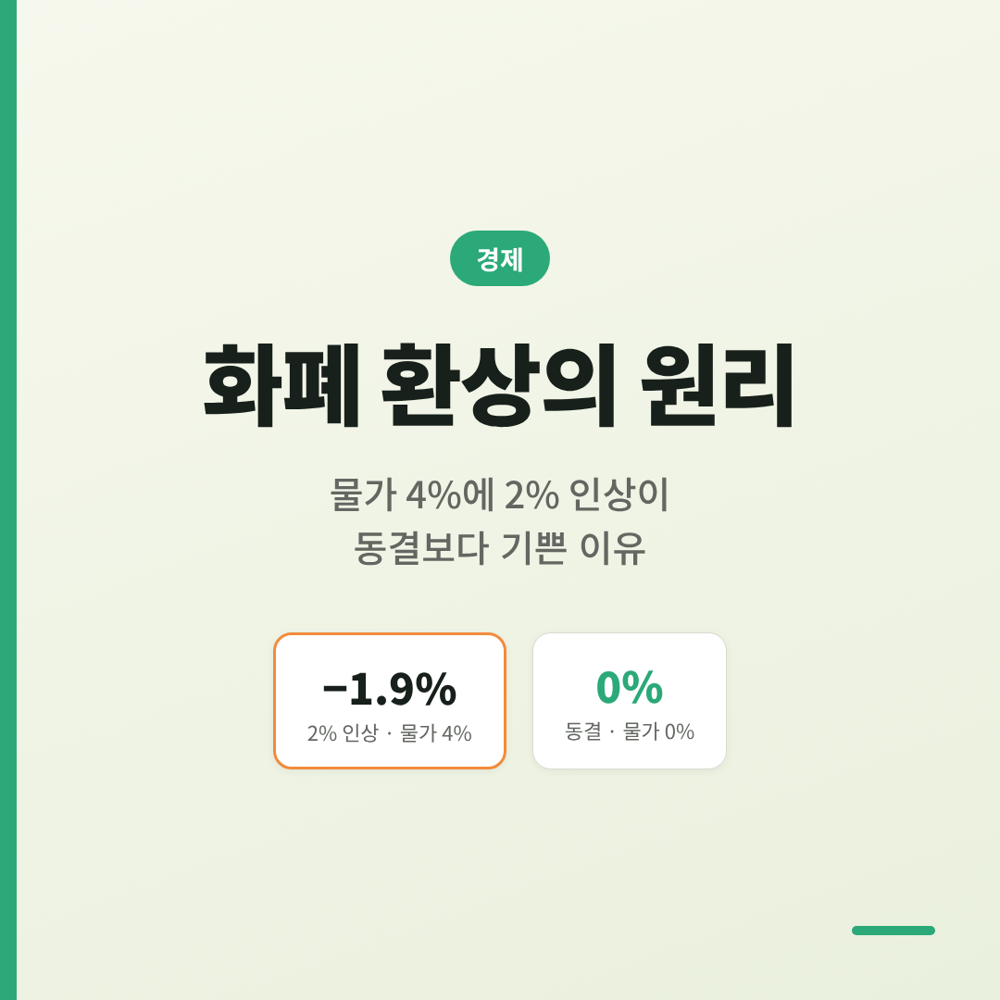
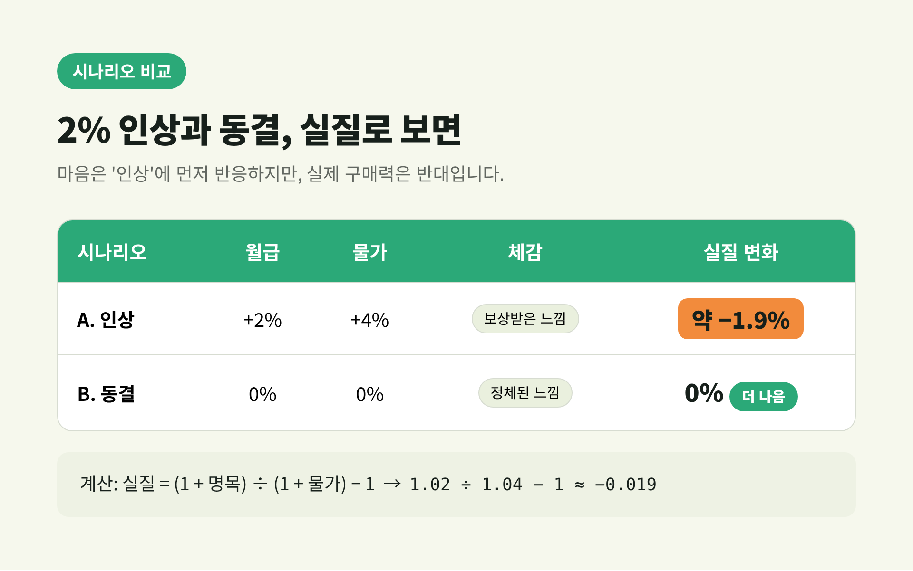
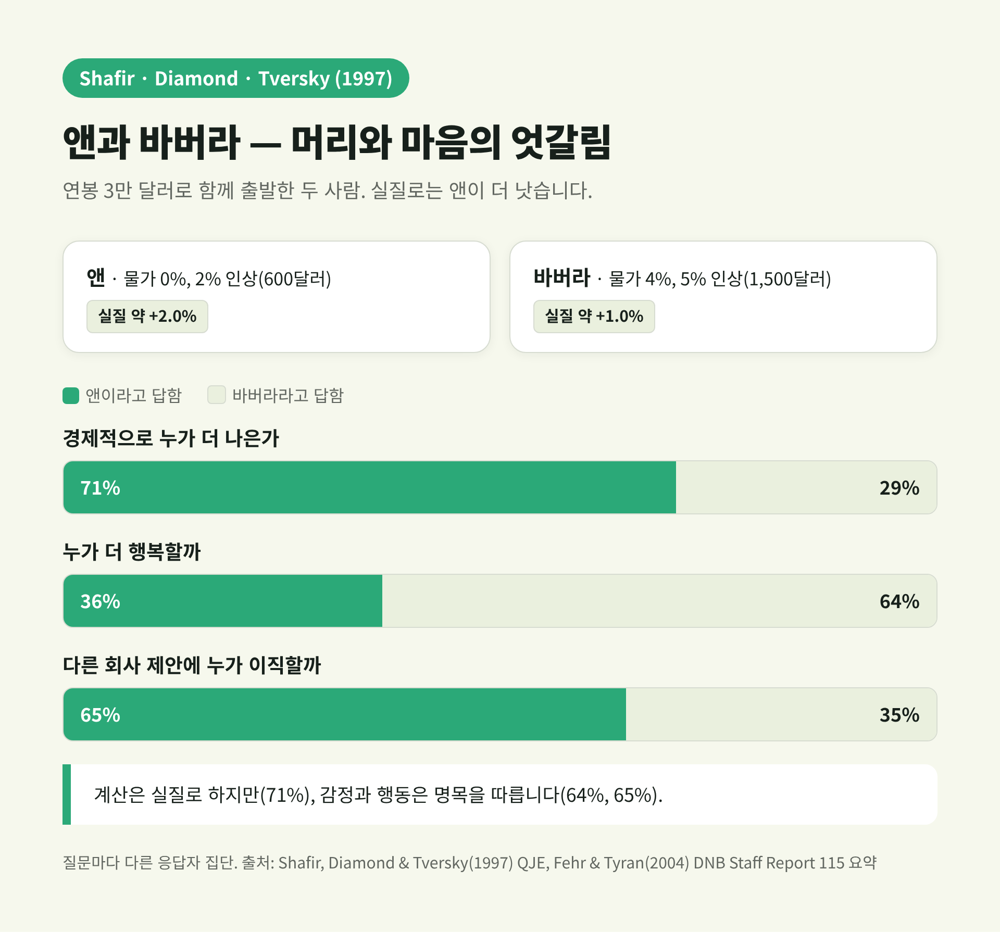
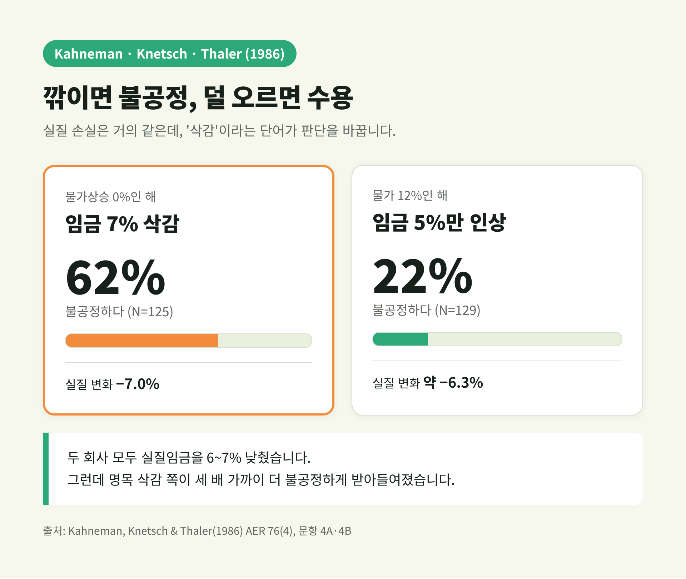
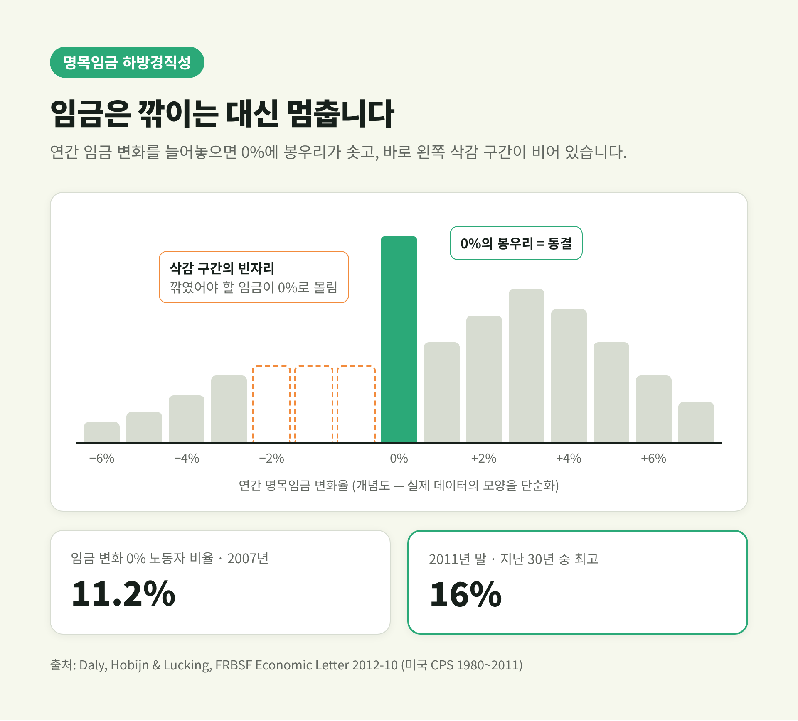
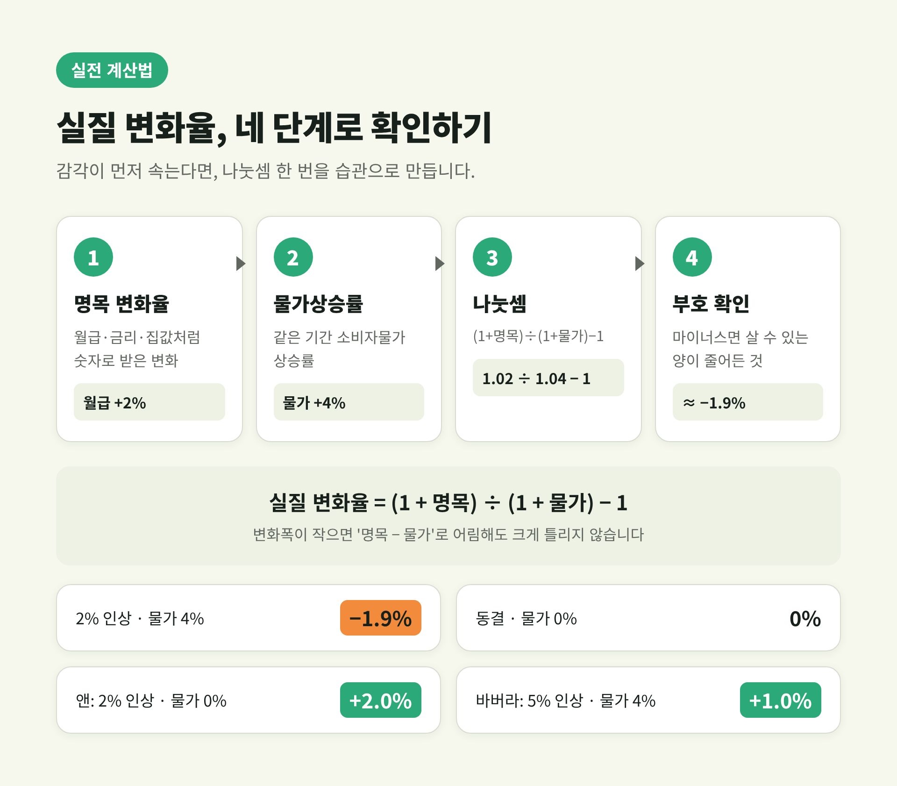

화폐 환상의 원리 — 물가 4%에 2% 인상이 동결보다 기쁜 이유

이번 글에서는 화폐 환상, 즉 돈의 액면 숫자에 마음이 먼저 반응하는 현상을 정리해 보겠습니다. 물가가 4% 오른 해의 2% 인상은 실질로 약 1.9% 손해입니다. 물가가 그대로인 해의 동결보다 오히려 나쁩니다. 그런데도 많은 사람이 인상 쪽을 더 반깁니다. 그 이유를 실험과 데이터, 그리고 집에서 바로 쓸 수 있는 계산법으로 살펴봅니다.
세 줄 요약
- 화폐 환상은 돈을 구매력(실질)이 아니라 액면(명목)으로 판단하는 편향입니다. 어빙 피셔가 1928년 같은 이름의 책으로 널리 알렸습니다.
- 설문 실험에서 사람들은 실질로 더 나은 쪽보다 명목 숫자가 큰 쪽을 더 행복하고 공정하다고 느꼈습니다.
- 이 편향은 임금이 잘 깎이지 않는 현상, 집값과 주가의 오해석과도 맞닿아 있습니다. 해법은 생각보다 단순한 나눗셈 하나입니다.
■ 화폐 환상이란 무엇인가
화폐 환상은 돈을 실질이 아니라 명목으로 생각하는 인지 편향입니다. 명목은 통장에 찍힌 숫자입니다. 실질은 그 숫자로 실제 살 수 있는 물건의 양입니다.
미국 경제학자 어빙 피셔는 이 현상에 이름을 붙였습니다. 그는 1928년 『The Money Illusion』에서 화폐 환상을 이렇게 정의했습니다. 달러든 어떤 화폐 단위든, 그 가치가 늘어나거나 줄어든다는 사실을 알아차리지 못하는 것.
피셔가 든 장면 하나가 유명합니다. 독일 마르크화가 원래 가치의 약 50분의 1로 떨어졌던 시기, 그는 베를린의 한 가게에서 셔츠를 샀습니다. 여주인은 이렇게 말했습니다. 이 셔츠를 다시 들여오려면 받은 값만큼 들지만, 예전에 더 싸게 사 왔으니 이익을 봤다고. 피셔의 판단은 반대였습니다. 그녀는 이익이 아니라 손실을 본 것입니다.
장부가 마르크로 적혀 있으니 숫자는 늘었습니다. 하지만 같은 셔츠를 다시 채워 넣을 힘은 그대로이거나 줄었습니다. 명목으로는 남고, 실질로는 밑진 거래였던 셈입니다.
■ 같은 1년, 다른 체감 — 2% 인상과 동결
먼저 계산부터 해 보겠습니다. 월급이 2% 오르고 물가가 4% 오르면 실질 변화는 1.02 ÷ 1.04 − 1, 약 −1.9%입니다. 월급이 동결되고 물가가 0%라면 실질 변화는 0%입니다.
실질로만 보면 동결 쪽이 약 1.9% 낫습니다. 그런데 마음은 대개 '인상'이라는 단어에 먼저 반응합니다. 동결은 정체로, 인상은 보상으로 읽히기 때문입니다.
이 직관을 실제로 검증한 연구가 있습니다.

■ 앤과 바버라 — 샤피어·다이아몬드·트버스키의 설문
1997년 엘다 샤피어, 피터 다이아몬드, 아모스 트버스키는 경제학 학술지 QJE에 「Money Illusion」을 발표했습니다. 이들은 사람들이 거래를 명목과 실질 두 가지 방식으로 동시에 떠올리며, 그 둘이 섞이면서 명목 쪽으로 판단이 기운다고 설명했습니다.
대표 문항은 이렇습니다. 앤과 바버라는 같은 대학을 1년 차이로 졸업하고 비슷한 출판사에 연봉 3만 달러로 입사했습니다.
- 앤: 첫해 물가상승 0%, 둘째 해 2%(600달러) 인상
- 바버라: 첫해 물가상승 4%, 둘째 해 5%(1,500달러) 인상
실질로는 앤이 약 +2%, 바버라가 약 +1%입니다. 연구진은 서로 다른 응답자 집단에게 세 가지를 따로 물었습니다.
| 질문 | 앤이라고 답함 | 바버라라고 답함 |
|---|---|---|
| 경제적으로 누가 더 나은가 | 71% | 29% |
| 누가 더 행복할까 | 36% | 64% |
| 다른 회사 제안에 누가 이직할까 | 65% | 35% |
흥미로운 점은 첫 줄입니다. 사람들은 계산을 할 줄 압니다. 71%가 앤이 낫다고 정확히 짚었습니다. 그러나 행복과 이직, 즉 감정과 행동을 묻자 판단이 뒤집혔습니다. 머리는 실질로 계산하고, 마음은 명목으로 느끼는 셈입니다.

같은 논문에는 집을 파는 문제도 있습니다. 세 사람이 각각 20만 달러에 집을 사서 1년 뒤 팔았습니다. 물가가 약 25% 떨어진 해에 15만 4천 달러에 판 애덤은 명목 −23%지만 실질로 약 +2%였습니다. 물가가 약 25% 오른 해에 24만 6천 달러에 판 칼은 명목 +23%지만 실질로 약 −2%였습니다.
이 연구를 베이징에서 재현한 논문이 인용한 미국 원 결과에 따르면, 가장 잘한 거래로 칼을 꼽은 응답이 48%로 애덤(37%)보다 많았습니다. 유일하게 실질 손해를 본 사람이 최고의 거래자로 뽑힌 것입니다. 다만 이 비율은 원문을 직접 확인하지 못하고 재현 연구의 인용으로만 확인했다는 점을 밝혀 둡니다.
■ 깎이면 불공정, 덜 오르면 수용 — 공정성의 비대칭
공정성 판단에서도 같은 패턴이 나옵니다. 대니얼 카너먼, 잭 네치, 리처드 탈러는 1986년 AER 논문에서 다음 두 상황을 서로 다른 응답자에게 제시했습니다.
- 물가상승 0%인 해에 회사가 임금을 7% 삭감: 불공정 62%, 수용 가능 38%
- 물가 12%인 해에 회사가 임금을 5%만 인상: 불공정 22%, 수용 가능 78%
실질로 보면 앞쪽은 −7%, 뒤쪽은 약 −6.3%입니다. 거의 같은 손실입니다. 그러나 '삭감'이라는 단어가 붙은 쪽은 세 배 가까이 더 불공정하게 받아들여졌습니다.
이 비대칭은 일상에도 그대로 남아 있습니다. 2021년 한국은행 연구도 20~59세 성인 500명을 조사해, 명목임금 삭감을 물가와 상관없이 불공정하다고 보는 경향을 확인했다고 보도됐습니다. 같은 조사에서 주택 거래 세 건의 순위를 묻자 56.4%가 명목 수익률이 가장 높은 사람을 최고의 투자자로 꼽았습니다. 한국인도 이 편향에서 예외가 아니라는 뜻입니다. 다만 이 수치는 언론 보도 한 곳으로만 확인했습니다.

■ 임금은 왜 잘 깎이지 않을까 — 명목임금 하방경직성
사람들이 명목 삭감을 싫어하면 기업은 어떻게 할까요. 깎는 대신 동결합니다. 이것을 명목임금 하방경직성이라고 부릅니다.
조지 애컬로프, 윌리엄 디킨스, 조지 페리는 1996년 브루킹스 논문 「The Macroeconomics of Low Inflation」에서 이 문제를 정면으로 다뤘습니다. 근거는 구체적입니다.
- 1959~78년 미국 제조업 자료에서 의미 있는 비율의 사업장이 임금을 깎은 해가 없었습니다.
- 캐나다의 1992~94년은 실업률 11.0%, 물가 1.2%였습니다. 이때 임금 협약 가운데 삭감은 5.7%, 동결은 47.2%였습니다.
경기가 나빠도 사람들은 깎이기보다 멈추는 쪽을 택했습니다. 이들의 시뮬레이션에서 물가상승률 3%일 때 실업률은 5.9%였지만, 0%로 낮추면 7.6%로 올랐습니다. 결론은 분명했습니다. 물가상승 0%를 목표로 하면 경제에 영구적인 실질 비용이 생긴다는 것입니다.
원리는 이렇습니다. 물가가 약간 오르는 경제에서는 임금을 동결하기만 해도 실질임금이 조금씩 내려갑니다. 아무도 '삭감'을 통보받지 않았는데 조정이 일어납니다. 물가가 0%라면 이 완충 장치가 사라지고, 기업은 임금 대신 사람을 줄이게 됩니다.
샌프란시스코 연준의 2012년 분석은 이 현상을 데이터로 다시 보여줍니다. 미국 노동자의 연간 임금 변화를 늘어놓으면 0% 지점에 뾰족한 봉우리가 서고, 그 바로 왼쪽인 삭감 구간은 움푹 비어 있습니다. 임금 변화가 0인 노동자 비율은 2007년 11.2%에서 2011년 말 16%로 올라 지난 30년 중 가장 높았습니다.

한국은행이 2016년부터 소비자물가 상승률 2%를 목표로 삼는 것도 이런 맥락과 무관하지 않습니다. 보통 꼽히는 이유는 디플레이션 위험을 피하고 금리를 내릴 여지를 남기기 위해서입니다. 애컬로프 등의 논리를 더하면, 약간의 물가 상승은 화폐 환상이 있는 세계에서 임금 조정을 부드럽게 하는 윤활유 역할도 합니다.
예전엔 화폐 환상을 '이론가가 가정해서는 안 되는 죄'로 여겼습니다. 경제학자 제임스 토빈의 말이 그만큼 유명했습니다. 지금은 정책 설계에서 진지하게 고려하는 현실의 변수로 다룹니다.
■ 집값과 주가에도 스며드는 명목의 착시
화폐 환상은 자산 가격에서도 관찰됩니다.
주택. 마커스 브루너마이어와 크리스티안 줄리아드는 2008년 논문 「Money Illusion and Housing Frenzies」에서 이렇게 설명합니다. 집을 살지 고민하는 사람은 흔히 월세와 대출 월 상환액을 비교합니다. 이때 인플레이션이 미래 상환 부담을 실질적으로 줄여 준다는 점을 빠뜨리면, 명목금리가 낮아졌을 때 집이 실제보다 싸 보입니다. 이들은 가격 대비 임대료 비율에서 합리적으로 설명되지 않는 부분의 변동을 상당 부분 인플레이션과 명목금리가 설명한다고 보고했습니다.
주식. 프랑코 모딜리아니와 리처드 콘은 1979년 투자자가 실질 현금흐름인 기업 이익을 명목금리로 할인하는 실수를 한다고 주장했습니다. 그렇다면 물가가 높을 때 주식은 저평가되고, 물가가 내려가면 과대평가될 수 있습니다.
샌프란시스코 연준의 2004년 분석은 이 가설을 지지하는 자료를 제시했습니다. 1960년대 중반 이후 S&P500의 이익수익률은 실질금리보다 명목 장기국채 금리와 더 가깝게 움직였습니다. 명목 변수 모델은 이익수익률 변동의 약 70%를, 실질 변수 모델은 26%를 설명했습니다. 1970년대 후반부터 80년대 초까지 고물가 시기에는 상당한 저평가가, 저물가였던 1990년대 후반에는 과대평가가 나타났습니다. NBER의 캠벨·부올테에노 연구도 1927~2002년 자료로 비슷한 결론에 이르렀습니다.
다만 이것은 어디까지나 '가설'과 그것을 지지하는 실증입니다. 시장 전체가 늘 이렇게 움직인다고 단정할 수는 없습니다. 이 글은 원리를 설명하려는 것이지 특정 투자 판단을 권하려는 것이 아닙니다.
■ 우리 몸이 먼저 속는다 — 뇌 영상 실험
2009년 PNAS에 실린 웨버 등의 연구는 한 걸음 더 들어갑니다. 연구진은 가격과 소득이 모두 50% 높은 조건과 낮은 조건을 번갈아 제시했습니다. 살 수 있는 물건의 양은 똑같았습니다.
그런데도 소득을 확인하는 순간, 보상 평가와 관련된 뇌 부위인 복내측 전전두피질의 활동이 숫자가 큰 조건에서 더 높았습니다. 이 뇌 반응의 크기는 설문으로 잰 화폐 환상의 정도와도 함께 움직였습니다. 화폐 환상은 계산 실수라기보다, 숫자를 보상으로 받아들이는 감각에 가깝다는 해석이 가능합니다.
■ 가계가 실질로 판단하는 실전 계산법
감각이 먼저 속는다면, 습관으로 바로잡는 수밖에 없습니다. 다음 네 단계면 충분합니다.
- 명목 변화율을 적습니다. 월급, 예금 금리, 집값 상승률처럼 숫자로 받은 것입니다.
- 같은 기간의 물가상승률을 찾습니다. 소비자물가 상승률을 기준으로 삼으면 됩니다.
- 나눗셈을 합니다. 실질 변화율 = (1 + 명목) ÷ (1 + 물가) − 1. 변화폭이 작으면 '명목 − 물가'로 어림해도 크게 틀리지 않습니다.
- 부호를 확인합니다. 결과가 마이너스라면 숫자는 늘었어도 살 수 있는 양은 줄어든 것입니다.
몇 가지 예를 들어 보겠습니다.
- 월급 2% 인상, 물가 4%: 1.02 ÷ 1.04 − 1 ≈ −1.9%
- 월급 동결, 물가 0%: 0%
- 앤(2% 인상, 물가 0%): +2.0% / 바버라(5% 인상, 물가 4%): 약 +1.0%
- 예금 금리 3.5%, 물가 2.5%: 1.035 ÷ 1.025 − 1 ≈ +1.0%(세전)

연봉 협상에서도, 예금 금리를 비교할 때도, 집값이 몇 년 새 몇 퍼센트 올랐다는 말을 들을 때도 같은 나눗셈을 거쳐 보시길 권합니다. 피셔가 『이자론』에서 지적했듯, 화폐 가치가 안정적일 때만 명목과 실질이 같습니다. 물가가 움직이는 한 두 숫자는 늘 다릅니다.
물론 한계도 있습니다. 가계마다 체감 물가는 다르고, 공식 물가지수가 내 장바구니를 정확히 반영하지는 않습니다. 그래도 기준이 하나 있으면 착시의 크기를 가늠할 수 있습니다.
정리하면 이렇습니다. 화폐 환상은 무지에서 오지 않습니다. 앤과 바버라 문항에서 보았듯, 사람들은 계산할 줄 알면서도 숫자가 큰 쪽에 마음을 줍니다. 그 마음이 임금을 동결로 묶고, 중앙은행이 물가 목표를 0%가 아닌 2%로 잡는 이유 중 하나가 되며, 때로는 자산 가격을 흔듭니다.
"통장의 숫자가 아니라, 그 숫자로 살 수 있는 것을 보십시오."
올해 받은 인상률이 정말 오른 것이냐고 물으신다면, 물가로 한 번 나눠 본 뒤에야 답할 수 있다고 말씀드리겠습니다.
참고자료
- Shafir, Diamond, Tversky (1997), "Money Illusion," Quarterly Journal of Economics 112(2) — IDEAS/RePEc
- Fehr & Tyran (2004), "Expectations and the Effects of Money Illusion," DNB Staff Report 115 — De Nederlandsche Bank
- Mees & Franses (2011), 베이징 화폐 환상 설문 재현 연구 — CORE
- Kahneman, Knetsch, Thaler (1986), "Fairness as a Constraint on Profit Seeking," AER 76(4) — 원문 PDF
- Akerlof, Dickens, Perry (1996), "The Macroeconomics of Low Inflation," BPEA — Brookings
- Daly, Hobijn, Lucking (2012), "Why Has Wage Growth Stayed Strong?" FRBSF Economic Letter 2012-10 — San Francisco Fed
- Fehr & Tyran (2001), "Does Money Illusion Matter?" AER 91(5) — EconPapers
- Weber et al. (2009), "The medial prefrontal cortex exhibits money illusion," PNAS — PMC
- Brunnermeier & Julliard (2008), "Money Illusion and Housing Frenzies," RFS 21(1) — EconPapers
- Modigliani & Cohn (1979), "Inflation, Rational Valuation and the Market," FAJ — CFA Institute
- Lansing (2004), "Inflation-Induced Valuation Errors in the Stock Market," FRBSF Economic Letter 2004-30 — San Francisco Fed
- NBER Digest (2004), "Are Equity Investors Fooled by Inflation?" — NBER
- Encyclopedia.com, "Money Illusion" — Encyclopedia.com
- Lindau Nobel Laureate Meetings (2017), "Money Illusion and Economic Literacy" — Lindau
- Irving Fisher (1930), The Theory of Interest — Econlib
- 아시아경제 (2021-06-28), 한국은행 화폐환상 연구 보도 — 아시아경제
- KB Think (2023), 2% 물가안정목표제 도입의 배경 — KB Think
- 한국경제 생글생글 (2025), 물가안정목표 해설 — 한국경제